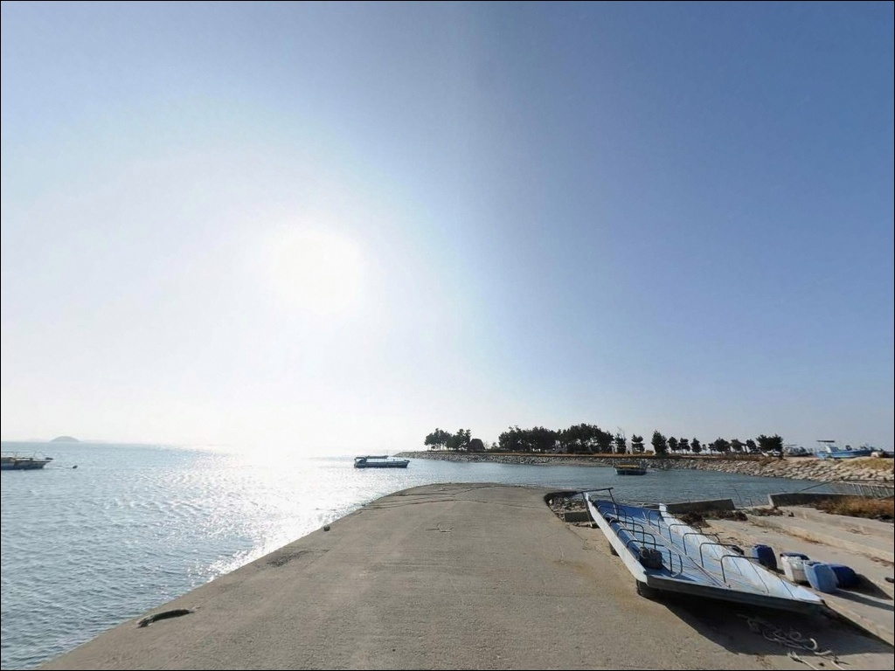
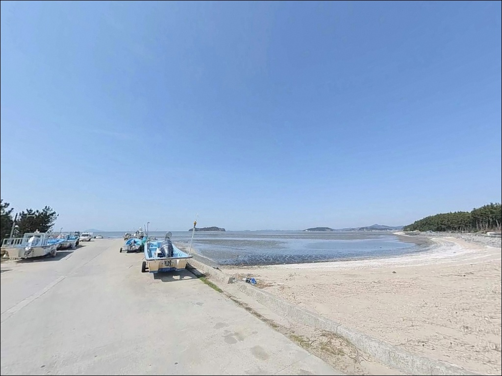
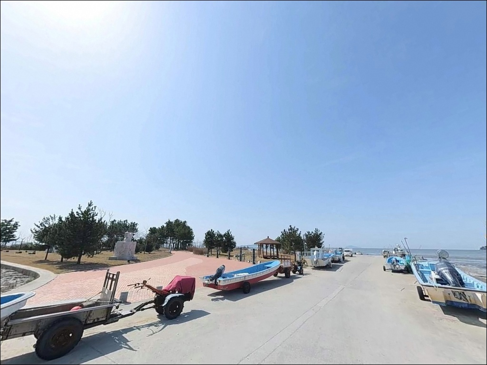
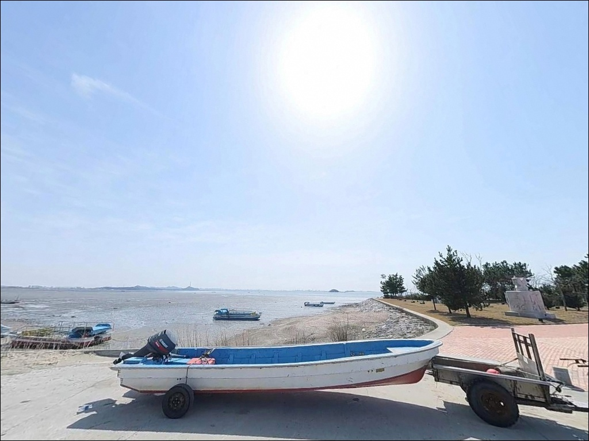
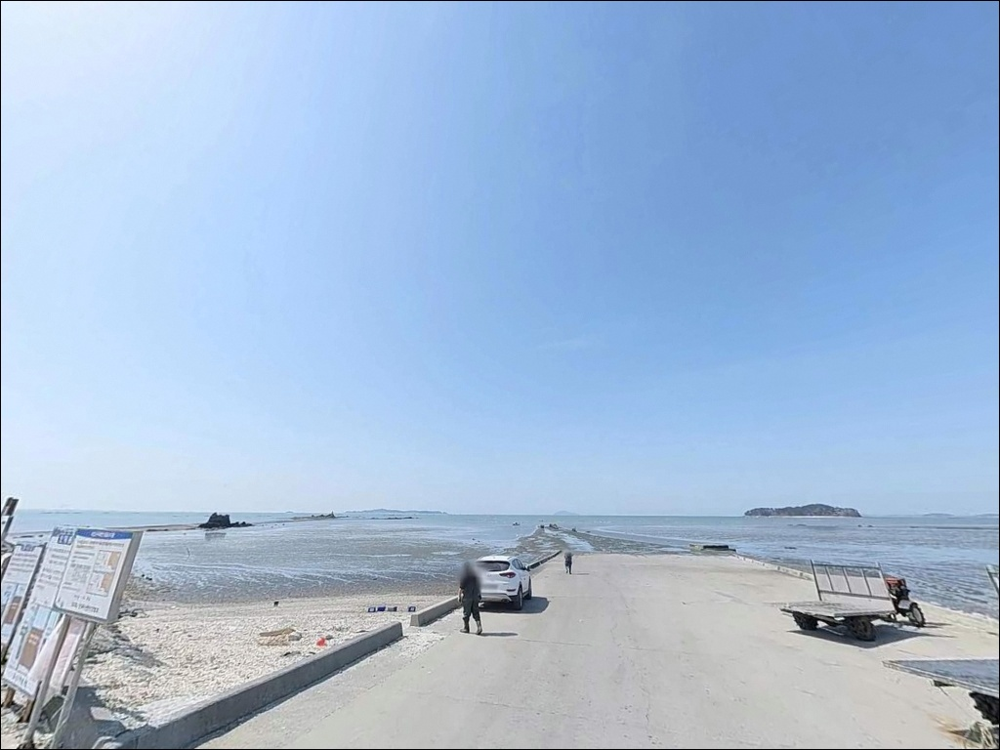
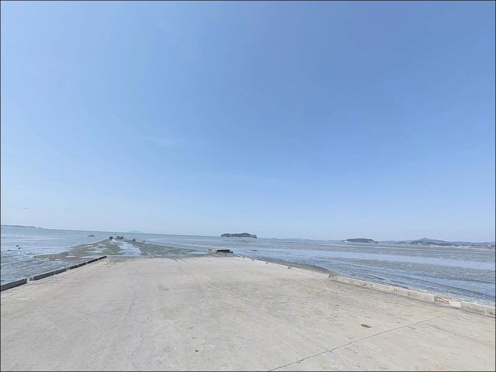
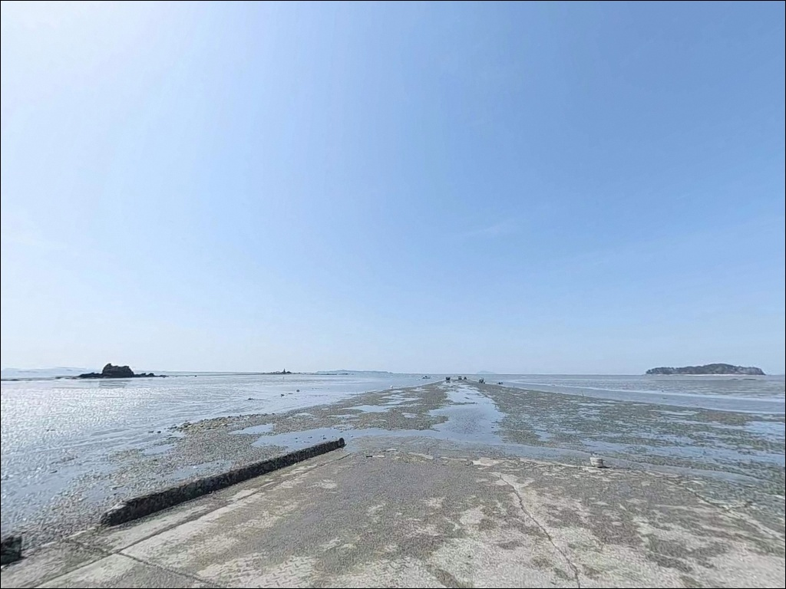
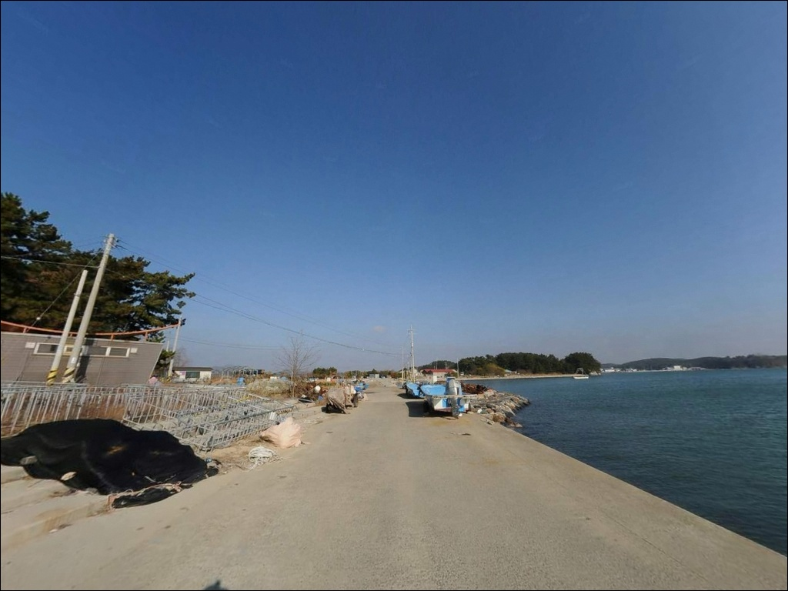

포인트 안내
매바위해변공원
충남 서천군 마서면 죽산리 산 4-22
매바위해변공원에서 낚시를 망치는
가장 흔한 실수는
물때 확인 없이 진입하는 것입니다.
조차가 5m를 넘는 이 지역에서
간조 시간대에 도착하면
넓은 갯벌만 드러날 뿐,
낚시 자체가 성립되지 않습니다.
이 구조를 모르고 방문했다가
헛걸음으로 돌아오는 경우가 생기는 이유입니다.
서천 마서면 죽산리에 자리한
이 해변공원은 서천갯벌을 가장 가까이
조망할 수 있는 곳 중 하나입니다.
공원 이름의 유래가 된 매바위를 비롯해
크고 작은 갯바위들이 해안선을 따라
이어지는 지형 구조입니다.
방파제나 항 시설은 없는
오픈형 해변 포인트입니다.
이 글은 매바위해변공원의
진입 환경, 물때 기반 낚시 여건,
차박 조건, 대안 포인트 동선에 집중합니다.
조황 단정이나 특정 어종 보장은
이 글의 범위에 포함되지 않습니다.

1. 진입 동선과 포인트 접근성
매바위해변공원까지 이어지는 진입로는
포장도로가 연결되어 있어
차량 접근 자체의 난이도는 높지 않습니다.
다만 마서면 해안 쪽으로 가까워질수록
도로 폭이 좁아지는 구간이 나타나며,
대형 SUV나 캠핑 장비를 실은 차량은
출발 전 진입로를 위성지도로
먼저 확인해 두는 편이 좋습니다.
공원 구조상 소규모 주차 공간이
조성되어 있으며, 회차도 어느 정도
가능한 환경입니다.
주차 후에는 공원 안내판에
명시된 구역 안에서 자리를 잡는 것이
기본 매너입니다.
어선 조업 동선이 없는 해변 공원 특성상
일반 방문객 기준으로
주차 자체에 큰 어려움은 없는 편입니다.
진입 도로 폭이 걱정되는 차량이라면
출발 전 내비게이션 안내와 함께
지도 위성 화면으로 도로 폭을
먼저 파악해 두면
불필요한 상황을 줄일 수 있습니다.

2. 차박 환경과 야간 체류 여건
서천 해안 차박지로 거론되는
매바위해변공원은 탁 트인 갯벌 전망과
민가 밀집도가 낮은 조용한 분위기가
특징입니다.
해변가에서 하룻밤을 보내면
이른 아침 서천갯벌을 가까이서
마주할 수 있는 위치입니다.
외해에 직접 노출된 지형이라
바람 영향을 크게 받는 날이 있습니다.
기상 예보에서 강풍이 예고된 날은
낚시는 물론 차박 체류도
불편할 수 있으므로,
당일 아침 다시 한번 풍속을
확인하는 것이 좋습니다.
야간에는 공원 조명 외에
별도 가로등을 기대하기 어려운 환경이라
개인 조명 장비는 필수입니다.
공원 조성 공간 특성상 차박·취사 가능 여부에
별도 안내가 있을 수 있으므로,
현장 안내판을 먼저 확인하고
불명확한 경우 서천군청에
사전 문의해 두는 편이 안전합니다.


3. 주변 편의시설 및 인프라 현황
매바위해변공원 반경 3km 이내에는
확정된 편의점이나 식당이 없습니다.
마서면 해안 지역 특성상
완전 자급 체제로 진입하는 것이
현실적인 준비 방식입니다.
식수, 식량, 연료, 여분 채비 모두
출발 전에 챙겨야 합니다.
반경을 더 넓혀 서천 서면 방면으로
이동하면 홍원항 일대에서
기본 인프라를 활용할 수 있습니다.
낚시 소품이 필요하다면
이 동선을 먼저 확인하는 것이 효율적이며,
응급 상황에 대비해
비상약품과 충분한 수분 준비는 필수입니다.

4. 물때가 이 포인트 낚시를 결정하는 이유
매바위해변공원에서 방문 준비의 핵심은
조석표 확인입니다.
죽산리 일대는 조차가 약 5.6m 수준으로,
서해안 가운데서도
수위 변동이 큰 편에 속합니다.
간조 시간대에 도착하면
갯벌이 넓게 드러나
낚시 여건이 사실상 없는 상태가 됩니다.
낚시 가능한 수심이 붙는 타이밍은
만조 전후 2시간 내외입니다.
바다타임에서 마서면 기준 조석표를 확인하고,
만조 시간에 맞춰 출발 시각을 역산하는 것이
이 포인트를 제대로 활용하는 방법입니다.
매바위해변공원 일대는
유네스코 세계자연유산으로 등재된
서천갯벌 권역에 인접해 있습니다.
갯벌 보호구역 내 낚시 가능 여부는
구역마다 규정이 다를 수 있으므로,
출조 전 서천군청(041-950-4019)에
미리 확인해 두는 것이
헛걸음을 막는 가장 확실한 방법입니다.
갯바위 진입 시에는
미끄럼 방지 신발과 구명조끼가 기본 장비입니다.
썰물이 시작되면 퇴로가
생각보다 빠르게 막히는 지형이라,
다음 썰물 시작 시간을 반드시
파악해 두고 낚시에 들어가야 합니다.

5. 지형 기반 낚시 여건 분석
매바위해변공원 앞바다는
갯벌과 갯바위가 함께 펼쳐진
서해 조간대형 지형입니다.
공원 이름의 유래인 매바위를 비롯해
칼바위, 먹섬 등 크고 작은 갯바위들이
해안선을 따라 이어져 있으며,
그 너머로 서천갯벌이 펼쳐지는 구조입니다.
만조 시 갯바위 끝단 주변은
수심 변화가 생기는 구간으로,
연안 어종이 접근하기 좋은 조건이
짧은 시간 형성됩니다.
갯벌과 바위 경계선 주변은
채비를 탐색하기 좋은 자리로,
만조 전후에 집중적으로
공략할 만한 구간입니다.
매바위해변공원은
물때에 따라 낚시 가능 시간이 결정되는
서해 조간대형 포인트입니다.
갯벌이 드러나는 간조 시간대에는
인근 대안 포인트로 이동하는
유연한 계획이 효율적입니다.
최신 조황은 출조 전
"서천 매바위 조황" 또는
"서천 마서면 낚시"로 검색해
확인해 보시기 바랍니다.


6. 포인트에 어울리는 낚시 스타일
이 포인트에서 가장 현실적인 방식은
원투낚시입니다.
해변 또는 갯바위 끝단에서
먼 거리로 채비를 보내
모래 바닥 구간을 노리는 방식으로,
만조 시 수심이 붙으면
바닥층 어종 탐색이 가능한 구조입니다.
루어낚시는 만조 전후
갯바위 주변 여밭 경계를
탐색하는 방식으로 운용할 수 있습니다.
갯바위 근처에 수심이 형성되는
타이밍을 노리는 방식이며,
지그헤드 채비로 가볍게 접근하는
스타일이 이 지형에 어울립니다.
서천 갯벌과 접한 갯바위 지형에서는
만조 전후 짧은 시간이
낚시 기회의 전부입니다.
낚시 가능한 시간이 한정되어 있는 만큼
원투와 루어를 번갈아 운용하는
탐색형 접근이 효율적입니다.
찌낚시도 갯바위 주변에서
일정 수심이 형성되는 만조 전후에
시도해 볼 만합니다.
수심이 확보되는 갯바위 끝단 자리를
먼저 파악하는 것이 선행 조건입니다.

7. 대안 포인트와 플랜 B 동선
매바위해변공원의 물때가 맞지 않거나
낚시 여건이 기대에 못 미칠 때,
같은 마서면 권역에서
이동 거리가 짧은 대안은
송석항입니다.
마서면 송석리에 위치한 지방어항으로
방파제와 물양장 시설이 갖춰져 있어,
물때 영향이 적고 도착 즉시
낚시 진입이 가능한 구조입니다.
서천 권역 전체를 놓고 보면
홍원항이 가장 안정적인 대안입니다.
서천군 서면에 위치한 이 항은
낚시 데크 시설이 갖춰진
서천의 대표 낚시 거점으로,
전어, 갑오징어, 쭈꾸미 배낚시
출조가 활발하게 이루어지는 곳입니다.
방파제 구조로
원투와 루어 모두 대응하기 좋은 환경입니다.
마량항도 같은 서천 해안선 권역에서
낚시를 이어갈 수 있는 대안입니다.
서천에서 어종이 다양하게 낚이는
지역으로 알려진 곳이어서,
특정 어종을 겨냥한 계획이 있다면
출조 전 마량 방면 조황을
먼저 검색해 확인하는 것이 좋습니다.

물때 하나면
매바위해변공원이 달라집니다
원투낚시나 루어낚시로
갯바위와 갯벌이 어우러진 포인트를
조용히 탐색하는 스타일이라면,
매바위해변공원은 서천 권역에서
아직 많이 알려지지 않은
소규모 탐색형 해변으로 접근할 만합니다.
낚시 메인 포인트라기보다는
물때를 잘 맞추면
조용히 던져볼 수 있는
여백 있는 포인트입니다.
다만 간조 시간대 방문, 강풍 예보,
서천갯벌 보호구역 낚시 가능 여부,
이 세 가지를 출발 전 확인해 두면
헛걸음을 막을 수 있습니다.
물때·기상·규정 확인, 완전 자급 준비,
이 두 가지를 갖추고 간다면
서천 갯벌을 가장 가까이에서 품는
조용한 출조가 될 수 있는 곳입니다.
탁 트인 서천 갯벌 풍경을 바라보며
조용히 하룻밤 머물고 싶은 차박 여행자라면,
물때에 맞춰 낚싯대를 드리우고
갯벌 아침을 맞이하는 이 포인트가
낚시와 쉬어감을 동시에 담을 수 있는
소박한 선택이 될 수 있습니다.